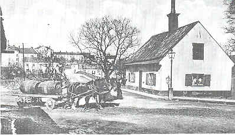
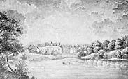
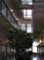
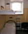
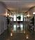
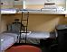
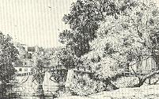
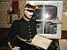
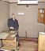
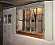

|
NAMNET Långholmen för alldeles obevekligt tanken till fängelset på ön,
vilket i snart två och ett halvt sekel funnits där under skilda benämningar:
spinnhus, korrektionsanstalt, straff- och arbetsfängelse, fångvårdsanstalt.
Det är naturligt om man vid en skildring av ön och dess förflutna mest uppehåller sig vid den gamla inrättningen. På Långholmen finns emellertid
mycket som inte har omedelbar anknytning till fångar och fångvård.
Promenerar man en sommardag över Västerbron från Kungsholmslandet
och kommer in över Långholmen, frapperas man av den yppiga grönska,
som utbreder sig på båda sidor om bron och som barmhärtigt döljer det
mesta av fängelset. På höger hand väller grenverket från några stora numera
cementplomberade ekar in över broräcket. De har ingått i ett tjugotal parkoch trädgårdskvarter, som den rike bryggaren av tysk börd Joachim Ahlstedt
på 1660-talet anlade till sin slottsliknande malmgård Allstavik. Huvudbyggnaden är ännu kvar, avklädd alla blomsterornament, halvkolonner och
trappbalustrader i stormaktstidens stil, och har sedan genom tiderna använts
som den första spinnhusbyggnaden 1724, kommendantsbostad, sinnessjukhus och verkstadskontor.

Långholmsbron
Också till vänster på öns östra udde bildar grönskan en varm inramning
till det halvannat sekel gamla stenbrottet i »Hemberget», de dåtida fångarnas rörande namn på öns eget berg till skillnad från brotten på Essingen och
i Huvudsta, där de oftast arbetade.
Långholmen har av skrivande och målande konstnärer ofta setts som en
idyll, även där spinnhuset skymtat i bilden. Elias Martins akvarell från 1787
och Johan Säfvenboms ungefär samtidiga blyertsteckning återger Långholmen med dess dåvarande bebyggelse kring spinnhuset, sjötullen och skutskepparvarvet som en lantlig idyll. Ännu i början av vårt eget sekel betade
direktörens kor på den ner mot Pålsundet sluttande ängsmarken.
Martins och Säfvenboms samtida, Bellman, var god vän med spinnhuschefen och operasångaren
Hans Björkman, vars hem på Långholmen han enligt en bevarad dikt gästade i juni 1788 och
kanske vid flera tillfällen. En gång låter han spinnhuset figurera som »Fröjas tempel» beläget »ned om den glesa skog, där
Mälarns bölja ler, och asp och lönn vid sjön sin gröna skugga ger». En annan gång anslår han en
karskare ton mot de »paltar», som hade till uppgift att föra på gator och krogar haffat kvinnfolk
till inrättningen.
På Långholmsbron stod en ledig vaktkonstapel och metade mört på små saffranskulor. Blom stannade
med armarna mot broräcket och såg på; det roade honom att låtsas som om han icke hade bråttom. Där
nere i det lugna vattnets tjocka grönska, i skuggan under bron, gingo stora rödögda mörtar av och an
kring fångvaktarens saffranskula, petade till den ett tag, vände tveksamt om och kommo tillbaka igen;
då och då kom en och annan sarv med röda fenor och gullrygg, vackra fiskar men litet leriga i smaken,
och emellanåt blänkte också den breda silversidan på en braxenpanka. På bägge sidorna av det smala
Långholmssundet doppade stora lutande pilar sina grågröna blad i vattnet, och vassen vajade sakta för
morgonvinden. Och i fonden långt borta stodo Stockholms kyrkor och torn i blått soldis, som ristade
med en fin nål. - En ångslup kom puttrande fram under bron på väg till staden och lade till vid
bryggan näst invid. Om man tar bort ångslupen, kunde denna tavla haft giltighet både på Elias
Martins tid och vår egen.


En 1900-talsförfattare, Erik Asklund, har med inlevelse och kärlek skildrat sin barndoms
upplevelser kring Pålsundet och Långholmen. Han har strövat vägen förbi fängelset upp till
Carlshäll, byggt av fängelsets arbetschef Carl Modeer på 1830-talet och mest berömt som
Brännvins-Smithens ståtliga sommarpalä flera decennier senare. Vid Sofieberg har han återfunnit
förebilden till Lars Boethius' tavla »Gröna huset i snö». Där bodde på 1830-talet livmedikus J. P.
Ekman, Årstafruns husläkare på hennes ålders höst.
Också Jan Fridegård har i all hatstämning i »Tack för himlastegen» plats för idyllen:
En paddliknande färja plaskade belåtet fram och tillbaka mellan två stadsdelar. En vit ångbåt styrde
sirligt ut från kajen för att börja sin sicksackgång mellan bryggorna, - tre trädgårdslådor ska av här,
två käringar där. Bredvid bron höll några karlar på att dra upp en båt för vinterförvaring.
En dag i juli 1781 kom en förnäm engelsman på besök till Långholmens spinnhus, den kände
fängelsereformatorn John Howard. Han kom närmast från Holland, Tyskland och Danmark och
han hade för avsikt att göra sig förtrogen med tillståndet i Europas fängelser. Han fann mycket att
anmärka på. På spinnhuset fanns män, kvinnor och barn, fattiga, vilsekomna och olyckliga,
brottslingar, tiggare och gatnymfer från Bellmansidyllens Stockholm. Männen och gossarna såg
sjukliga ut och deras rum var smutsiga och motbjudande. Männen var inte skilda från gossarna,
inte heller kvinnorna från flickorna. Skörbjugg florerade, enligt Howard beroende på sträng
isolering, bristande renlighet och bruket av salt mat. Han var övertygad om det olämpliga i att
anförtro inrättningen åt en person, som var ekonomiskt intresserad i den och varken
fängelserummens beskaffenhet eller fångarnas utseende ingav något förtroende för
spinnhuschefen, som vid besöket just var den tidigare nämnde operasångaren Björkman, kallad
Spinnhus-Herkules efter sitt mest berömda framträdande som Herkules i Glucks opera Alceste.
Hade Howard kommit något årtionde tidigare, skulle han också ha träffat Diedrich Johan
Trundman, besjungen av Bellman som en trägen Bacchusdyrkare och placerad på skolmästarens
post inom spinnhuset. Han hade dött helt försupen på 1770-talet.




Bilder från dagens vandrarhem i gamla fängelset
En något senare besökare, diplomaten Fransisco de Miranda är i sin dagbok också kritisk efter
ett besök tillsammans med Elias Martin den 18 oktober 1787. Hjonen var nästan nakna och dåligt
underhållna. Några arbetade, andra inte. Det hela gav intryck av oordning och misär. »Jag skulle
önska att en så bra sak bleve bättre skött.»
Vid sidan av sjukdomar och osunda levnadsförhållanden gick den legaliserade såväl som den otillåtna
misshandeln illa åt arrestanternas hälsa. Förseelser beivrades medelst »klumpens» bärande upp till åtta dagar och med »karbaseslängar»
upp till tolv slag. Man kunde med karbasen tvinga de olyckliga att dansa med händerna
bakbundna. »Andras löje är ofta ett verkande straff» är en pedagogisk reflexion i
sammanhanget, en annan sådan är av mera eftersinnande slag och gäller sannerligen än i dag,
att »hårda medfarter alstrar merendels hårt folk». Förseelser, som kunde medföra klump och.
karbas kunde vara »den goda matens orättmätiga ratande, utslående eller bortbytande mot kaffe,
vetebröd, brännvin eller slika varor ej tillhörigt fångar som bör späkas.» Vidare »diktade
kyrksjukor, bönens och predikans försummande».
Så småningom kom man i gång med den arbetsgren, som skulle bli bestående under flera decennier,
stenbrytning och bearbetning av sten. Man levererade genom åren ofantliga mängder gatsten och
sträcksten, när staden började byta kullersten mot tuktad sten åtminstone på huvudgatorna. Stenen
bröts, som förut nämnts, mest på Essingen och i Huvudsta och fördes sedan med pråmar till
Långholmen, där den bearbetades. Också fångarna forslades fram och åter i pråm och i varje
sådan medföljde militär med skarpladdade vapen. Denna militärbevakning tjänstgjorde också
vid brytningsplatserna och uttogs med kvartalslånga tjänsteperioder från olika mellansvenska
regementen. Ovanan vid behandling av fångar gjorde väl att både rymningar och fylleri
förekom, någon gång också mord och självmord. Ett beryktat mord på en pråmeskorterande
soldat ur Hälsinge regemente ägde rum på Årstaviken den 26 juni 1861, då tre fångar kastade
soldaten över bord så att han drunknade. Fångarna rymde men togs efter några dagar. En av
dem frigavs efter ett nära 40-årigt livstidsstraff först år 1900.
Fångvården ställde sig vid denna tid i princip utanför anskaffning av sysselsättning åt
fångarna. Dessa uthyrdes i stället under ett tjugotal år framåt till särskilda entreprenörer, som
betalade en struntsumma per fånge och dag och sedan höstade in en ansenlig vinst från
beställarna av fångarbetet.
Ungefär samtidigt med stenbrytningen arbetade andra fångar åt yllefabriken på Reimersholme,
även de under militärbevakning, 1 korpral och 12 meniga. Att arbetena var av stora
proportioner visar uppgiften att 1872 inte mindre än 235 långholmsfångar varje dag arbetade på
fabriken. Allteftersom denna styrka växte kom man på iden att anlägga en särskild provisorisk
bro mellan de båda öarna. I Stadsmuseets bildarkiv finns ett fotografi av fabriken och bron. På
brons mitt kunde två brodelar på hjul skjutas tillbaka åt var sitt håll, när bron stängdes efter
arbetstidens slut. Vid hemmarschen på vinterkvällarna över bron bar varje fånge en liten lykta,
så att tåget kom att likna en lång lysande orm.
I själva fängelset hade under många år August Wicander inrättat en filial till sin
korkskärningsfabrik i Skinnarviksbergen. Han hyrde fångarbetskraften av entreprenören kapten
J. A. Berg på Heleneborg, som genom sin verksamhet med åren blev mäkta förmögen och
använde avsevärda belopp på att köpa konst. Sina samlingar, i 1880-talets penningvärde
värderade till nära 100 000 kronor, donerade han till numera Stockholms universitet liksom
medel till upprättandet av en professur i konsthistoria.
Långholmen hade vid denna tid en beläggning av 320 straffångar och 225 korrektionister, dvs.
s. k. försvarslösa eller »lösdrivare». Tidvis kunde beläggningen uppgå till några hundra fler.
Hyggligare korrektionister överfördes efter en tid på Långholmen till Rindö för att syssla med
befästningsarbeten. Transporterna skedde med roddbåt. Fjäderholmarna med där belägen krog blev
oftast en för svår frestelse både för roddare, vaktknektar och korrektionister och det var ej ovanligt
att samtliga kom fram i väl upprymt tillstånd.
Under 1870-talets senare hälft byggdes det nuvarande fängelset. Det var till större delen uppfört efter
cellprincipen, som föreskrev cellvistelse dag och natt i upp till tre år. Detta medförde en radikal
förändring i sysselsättningsformerna för fångarna. Flertalet arbeten måste utföras i cellen och man
övergick därför alltmer till skrädderi, korgmakeri, borstbinderi och tillverkning av tändsticksaskar.
Vissa gemensamma arbetslokaler fanns dock. När förmän eller »distingerade personer» inträdde i en
arbetssal ropades giv akt. Bevakningsbefälhavarens morgonhälsning skulle besvaras med »Gud bevare
löjtnanten». Denna tillönskan kom nog knappast från hjärtat. Då fängelset var nytt besöktes det av
många »distingerade personer», bl. a. Oscar II, kronprinsen av Danmark och storhertigen av Baden.
I samband med Oscar II:s besök berättas en anekdot, om vars sanningshalt jag ej vågar ha någon
mening. När Oscar kom upp i kyrkan tog de församlade fångarna upp »Ur svenska hjärtans djup».
Kungen sägs omedelbart ha lämnat kyrkan med utropet: »Den sången vill jag bara höra sjungen av frie
män.»
Den 5 december 1880 hade denna kyrka invigts och bevakningspersonalen var enligt en bevarad
order klädd i parad med plåt i mössan men utan plym. Länge uppehölls bevakningen i kyrkan av
vaktkonstaplar med gevär.
I samband med det nya fängelsets öppnande 1880 utgav dåvarande direktören överstelöjtnant
Fredrik Berencreutz en samling instruktioner, ur vilken en del är värt att anföra. Enrumsfånge skulle,
heter det, hållas helt isolerad från medfångar, och under den första veckan av hans vistelse på
fängelset skulle det inte lämnas ut något arbete till honom. Han skulle nämligen då besökas av
själasörjaren, som skulle förmana och påverka honom.
En gång i månaden fick han ta emot besök och
en gång var tredje månad fick han skriva brev till anhöriga. Arbetstiden på fängelset varade från kl. 6
till 19 med en timmes middagsrast. Fånge skulle ha snaggat hår och fick inte låta skägget växa sedan
det avrakats. En kortklippt och slätrakad person skulle ju vid den tiden väcka misstankar, om han som
rymling uppträdde på stan.
Den sista avrättningen i Sverige skedde på Långholmen den 23 november 1910, då
rånmördaren Ander miste huvudet medelst den nya från Frankrike införskaffade fallbilan.
Efter att det nu i minst 25 år har talats om Långholmsfängelsets snara nedläggande, ser det äntligen ut
som om planerna står inför ett någorlunda snart förverkligande. En ersättningsanstalt står helt färdig
och en annan har påbörjats. Om Långholmens framtida användning tvistas det mellan partierna; i
broschyrer till senaste kommunalval talades det om päronspaljéer i de bergsgrottor, där fängelset
legat nedsprängt och om stora svepande grönområden, andra vill ha en inte ringa hyreshusbebyggelse
på ön. Det första alternativet, jämte bevarandet av några av de vackra 1700-talshusen Henriksvik,
Fyrkanten och Sjötullen, synes vara det mest tilltalande alternativet. Länge kommer ön att i
folkfantasin vara fängelseön framför andra, hur den än omdanas. Så gamla ränder som dessa går aldrig
riktigt ur.
|
|
Den ljusblå armen
med krokiga ben,
med rostiga plitar
i spinnhusallén,
på den jag ej litar.
Jag själv i små bitar
trancherat kapten.
I den underbara episteln nr 48 om Ulla Winblads hemresa från Essingen en
sommarmorgon 1769 (»Solen glimmar blank och trind») far de glada nattsuddarna
Långholmen förbi, och ön med dess spinnhus föranleder den gången inga kommentarer,
kanske helt enkelt därför att spinnhuset ej var synligt från Mälarsidan.
Också långt senare har Långholmen uppfattats som en idyll och med större berättigande, eftersom
dess Mälarsida först på 1870-talet belades med jord på de tidigare helt kala bergknallar, som man ser
t. ex. på C. S. Bennets målning från 1851. Jorden fick man ur mudder, som bl. a. hämtades upp ur
Barnhusviken. Drätselnämndens avsikt var enligt dess protokoll från 1871 att »Långholmsbergens
beklädande med gräs och träd skulle bidraga till förskönande av infarten till Stockholm från västra
sidan». Det är denna händelse som Strindberg skildrar i »När träsvalan kom i getapeln». För att ge
sagan symbolisk syftning låter han fångar utföra allt detta arbete, vilket i verkligheten inte synes ha
varit fallet.
I Oskar den förstes tid var berget icke grönt. Det var tvärtom grått och kalt, ty där växte
ingenting, varken mossor eller styvmorsblommor, som eljest trivas på nakna hällar. Där
var bara gråsten, och gråa människor, som sågo förstenade ut, höggo i sten, sprängde sten
och buro stenar. Bland detta stenåldersfolk fanns en som såg mera förstenad ut än de
andra. Han var en yngling, när han i Oskar den förstes tid stängdes in i detta fångahuset
därför att han dödat en människa.
Så skildras muddringen av allt orent som fanns på sjöbotten:
Det kom dränkta kattor och gamla skor, ruttet fett från stearinljusfabriken, färgfibrer
från färgeriet Blå Hand, garvarbark från garveriet och allt mänskligt elände, som
tvätterskorna i hundra år sköljt ut från klappbryggan.
Och allt detta lossades på Långholmsklipporna.
Tiden gick, och mannen var borta från Långholmen i bortåt tjugo år, då han en dag efter
återkomsten blev utkommenderad att anlägga vägar ute på klippan.
När han kom ut på udden såg han icke mer någon klippa utan en ljuvligt grönskande lund,
där löven glittrade i vinden som småvågor på sjön. Där voro höga vita björkar och skälvande
aspar, och i stranden stodo alar. Det var denna nya gröna ö, som Torsten Palm och Axel
Nilsson sedermera målade från Smedsudden tvärs över vattnet och där Torsten ofta gjorde
strandhugg med »Den blå galejan».
Idyllen Långholmen har också Hjalmar Söderberg skildrat med utsökt friskhet i novellen
'Blom'. När förre skrädderiarbetaren Oskar Valdemar Napoleon Blom som frigiven lämnar
Långholmsfängelset, möter honom denna tavla:
Också vid Mälarvarvet och Sjötullen finns idyller. Vackrast är det gamla gula tullskrivarebostället på
den tomt där Långholms sjötull låg före 1784. Huset kallas sedan cirka hundra år Henriksvik, och
sedan det på 1870-talet övertogs av fångvården har det varit bostad för fängelsets präster och lärare.
Där har Erik Heden, Gunnar Fant och Sigfrid Leander med några decenniers mellanrum lekt som
barn. I den gamla trädgården blommar vårens nunneört och högsommarens jättelika strätta, och strax
utanför växer axveronika och rödfibbla, främlingar i denna oas i storstadens geografiska mitt, där man
av trafiken egentligen bara hör tuffandet av sandpråmsläpen från Underås.
Öster om Ahlstedts gamla park och trädgård låg Björkhagen, en ängsmark, som på
1770-talet uppodlades av den färgstarke traktören Magnus Benedictius. Under 1800-talets allra
första år uppfördes där en ståtlig byggnad, som revs när Västerbron byggdes 1934. Där bodde
vid 1800-talets mitt järnkramhandlaren John Wall.
Skörpilarna vid Pålsundet hör till de omistliga skönhetsvärdena kring ön. Idyllen
Långholmen var i äldre tid bara förbehållen några få. På 1700-talet togs bropengar upp av dem
som besökte ön och även av där boende som inte hörde spinnhuset till. Bron var tillsluten med
grindar. Årstafrun gjorde täta turer till spinnhuskyrkan och till både de äldre och de nyare sjötullsbyggnaderna, där hon pratade bort en stund med möbelhandlaränkan Lundberg eller hos
von Kemnas.

Gamla Långholmsbron från väster
I den senare familjen fann Magdalena Rudenschöld trogna vänner under sin
påtvungna Långholmsvistelse åren 1794-96. Med undantag av den första tiden tilläts hon göra
rätt långa strövtåg på ön på egen hand och så vitt man vet bodde hon i ett numera sedan mycket
länge rivet prästboställe med sina i fångenskapen medförda tjänare tills hon vid
midsommartiden 1796 fick avsegla till Gotland för att där bosätta sig.
På spinnhuset skulle ett visst kvantum spunnet garn motsvara den ådömda tiden. Kunde
arrestanterna avverka mer, kunde de bli fria tidigare. Fordringarna på en dagsprestation var dock så
stränga att den sällan hanns med.
Under 1800-talets första decennier gjordes omfattande tillbyggnader på spinnhuset, och
inrättningen framträdde 1827 i ny skepnad som »Södra Arbets- och korrektionsinrättningen i
Stockhalm», underställd den nybildade fångvårdsstyrelsen. Spinnhuset hade betraktats som en mer
merkantil inrättning och hade sorterat under kommerskollegium.
Natten till den 13 juli 1827 fördes
kvinnorna, 264 till antalet, i förhyrda pråmar och under överinseende av högste chefen för fångvården
i riket över till en liknande anstalt invid nuvarande Norra Bantorget. Det var säkerligen en dyster
flotta, som med friherre Gustaf Fredrik Åkerhjelm som kommendant styrde ut ur Pålsundet och uppför
Klara sjö och Barnhusviken. Sedan dess har Långholmen varit en anstalt helt avsedd för män, tills
hundra år senare en liten kvinnoavdelning åter inrättades.
De nya byggnaderna var ståtliga i jämförelse med det sedermera tillbyggda hus som på sin tid
av staden inköptes från gamle Ahlstedts arvingar. Södra flygeln, som inrymde kyrkan, hade en
avrundad fasad med ett kupolkrönt klocktorn, där den gamla spinnhusklockan på nytt hängdes upp.
Den hade gjutits 1724 och bar den trosvisst naiva inskriften »Tiden gåhr, klockan slåhr, ewigheten
före ståhr».
Arbetena på den nya korrektionsanstalten var av skiftande slag, men den gamla spånaden synes
efterhand ha ersatts av mera rejäla yrken. Flertalet »korrektionister» sysselsattes med
ombyggnadsarbetena, och de som inte var lämpade för sådant arbete sattes i den trampkvarn, som
under några år var i bruk också på Långholmen. Man drev med den dels en mjölkvarn, dels en såg,
och den synes aldrig ha körts tomning som då och då praktiserades i England, ursprungslandet för
denna besynnerliga mekanism. Fångarna »malde vind», som de själva kallade tomkörningen.
Av mera tillfälliga arbetsgrenar för långholmsfångar må nämnas framdragande av Södra
stambanan 1859 över Liljeholmen.
Brännvinet var vid förra seklets mitt ett betydande problem på fängelserna. Från början var
det legaliserat som en extra premie åt dem som syssade med hårt arbete. De fick varje morgon
en jungfru brännvin tillsatt med beska droppar, och till julen 1827 tilläts 3 jungfrur per man
medan 32 »gossar» fick vardera 3 qvarter öl. Så småningom upphörde detta legaliserade bruk
och då satte smugglingen fart. Brännvin fördes in på de mest finurliga sätt, i oxblåsor, i
militärbevakningens gevärspipor och i dubbelbottnade såar. Knivdåd och rena upplopp
förekom.
Det mest bekanta upploppet skedde luciadagen 1853, då fängelset nyss fått en ny direktör, som hade satt sig i sinnet att stämma brännvinsflödet. Bl. a. hade han låtit mura
igen ett mindre hål i fängelsemuren, genom vilket brännvin flitigt insmugglades. Myteriet, varom
utförligt står att läsa i samtida tidningslägg, blev mycket dramatiskt. Fångarna beväpnade sig med
stenar ur gatstensförråden, slog in dörrar i cellavdelningen och befriade cellfångarna, sprängde porten till
yttre fånggården, krossade fönster, dörrar och möbler i det s. k. styrelserummet. Sen drog man i väg
till kyrkan, där bl. a. altaret vandaliserades med yxhugg.



Bilder från fängelsemuséet i gamla fängelset
På fängelsegården gjorde man ett jättebål på psalmböcker, kyrkböcker, domstolsutslag, fångrullor.
Under tiden hade trumvirvlar och eldsflammor alarmerat arbetarna från Bergsunds närbelägna
fabriker. Arbetet där avblåstes och beväpnade med järnstänger och släggor besatte arbetarna
Långholmsbron. Därmed hindrades den planerade massrymningen. Sedan militär tillkallats från
Stockholms garnison, skingrades myteristerna och återfördes till celler och sovsalar.
Den nye
direktören hade upprepade gånger under tumultet hotats till livet, bl. a. hade man tillverkat en kista
åt honom med namn och dödsdag ingraverat. Vid upploppets slut återstod en omfattande
skadegörelse, men ingen, varken av fångarna eller av befattningshavare och militärer, hade blivit
allvarligare skadad. Senare hittade man under uppbrutna golv hundratals dyrkar, yxor och sågar.
Meningen synes ha varit att först sätta eld på fängelset och sedan rymma. Att denna plan ej
genomfördes tillskrevs den allmänna berusningen bland fångarna. Anförarna var redlösa när de
anträffades.
Cellfönstren var små och satt högt uppe. Ville man se ut genom dem måste man ta till cellpallen,
vilket var en svår förseelse. För att motverka fönstertittning infördes den remarkabla föreskriften att
dammlagret i fönsterbänken ej fick bortskaffas. Det skulle genast märkas om en fånge varit uppklättrad där eller
bara stött sig med handen.
Skolundervisning för fångar i elementarämnen hade börjat anordnas 1868, och på 1880-talet
var en skolföreståndare och en lärare anställda för undervisningen. Därmed trädde för första
gången ett civilt inslag vid sidan av prästen in i fängelsets helt militärbehärskade miljö. Lektioner
för cellfångar gavs i en särskild skolsal, försedd med cellskåp, öppna bara fram mot läraren. Då
fångarna gick till och från skollokalen var de försedda med ansiktsmasker för att de inte skulle
känna igen varandra. De släpptes dessutom i väg med långa luckor.
Jag minns min egen första dag
som lärare på Långholmen. Det var den 29 juni 1925 och jag var en 21-årig fil. stud., uppvuxen i
ett annat fängelses personalbostadshus men helt obekant med fängelsets värld på grund av min fars
med säkerhet av sin överordnade ålagda vana att i hemmet aldrig dryfta tjänstens detaljer.
När jag
kom in i skolsalen och eleverna tagit av sig sina masker och satt sig i sina bås, började en av dem
att presentera klassen man för man med namn och en del andra data. Så dåligt fungerade masker
och avskärmningar och så väl djungeltelegrafen, på den tiden utövad medelst knackspråket.
Förutom Magdalena Rudenschöld, som av förmyndarregeringen fråntogs sitt adelsnamn och.
sin frökentitel och omnämns i äldre Långholmshandlingar som »Magdalena Carlsdotter, f. d.
fröken», har många celebra fångar passerat Långholmen genom seklerna. Där har funnits Carl
Fredrik Lilja, en samtida till Lasse Maja och knappast mindre beryktad än denne, särskilt för
sin stöld av silver på Riddarhuset i december 1850. Även de kända kumpanerna Hjert och
Tector, som 1870 gjorde en plundringskupp mot postdiligensen mellan Sparreholm och
Malmköping, varvid två personer mördades, hade en kort tid före brottet suttit på Långholmen,
där de lärt känna varandra. Båda blev ett par år senare avrättade, och deras levnadsöden
besjöngs i skillingtryckvisor många år efteråt.
|